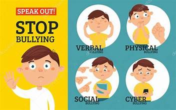
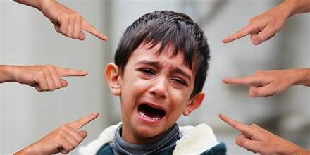
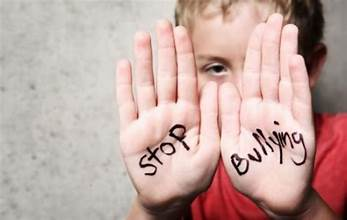
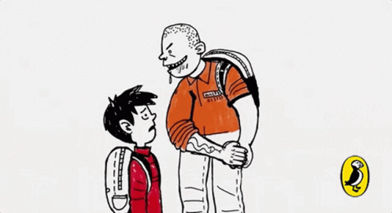

ditulis oleh Caaputri. pada 29 Oktober 2023.
Apa itu Bullying ?
Bullying merupakan segala bentuk penindasan atau kekerasan yang dilakukan dengan sengaja oleh satu orang atau sekelompok orang yang lebih kuat atau berkuasa terhadap orang lain, dengan tujuan untuk menyakiti dan dilakukan secara terus menerus. Menurut Unicef, bullying bisa diidentifikasi lewat tiga karakteristik yaitu disengaja (untuk menyakiti), terjadi secara berulang-ulang, dan ada perbedaan kekuasaan. Bullying bisa terjadi secara langsung atau online. Bullying online atau biasa disebut cyber bullying sering terjadi melalui media sosial, SMS/teks atau pesan instan, email, atau platform online tempat anak-anak berinteraksi.
Jenis Bullying
1. Kontak Fisik Langsung
Bullying secara fisik paling tampak dan mudah diidentifikasi. Contoh bullying fisik yaitu memukul, mendorong, menjambak, menendang, menampar, mengunci seseorang dalam ruangan, mencubit, mencekik, menggigit, mencakar, meludahi dan merusak serta menghancurkan barang-barang miliki anak yang tertindas, memeras, dan lain-lain.
2. Kontak Verbal Langsung
Bullying dalam bentuk verbal biasanya menjadi awal dari perilaku bullying yang lainnya serta dapat menjadi langkah pertama menuju pada kekerasan yang lebih lanjut. Contoh bullying verbal yaitu julukan nama, celaan, fitnah, sarkasme, merendahkan, mencela atau mengejek.
3. Perilaku Nonverbal Langsung/ Tidak Langsung
Bullying jenis ini seperti tindakan melihat dengan sinis, menjulurkan lidah, menampilkan ekspresi muka yang merendahkan, mengejek atau mengancam, biasanya disertai oleh bullying fisik atau verbal. Sedangkan kontak Verbal yang Tidak Langsung yaitu Tindakan mendiamkan seseorang, memanipulasi persahabatan sehingga menjadi retak, sengaja mengucilkan atau mengabaikan, mengirimkan surat kaleng.
4.Cyber Bullying
Tindakan menyakiti orang lain dengan sarana media elektronik (rekaman video intimidasi, pencemaran nama baik lewat media sosial).
5.Pelecehan Seksual
Kadang tindakan pelecehan dikategorikan perilaku agresi fisik atau verbal.
Dampak Bullying
Menurut Suyatno (2003) yang dikutip dalam buku Model Intervensi Psikologi Islam Konseling Kelompol Tazkiyatun Nafsi: Salah Satu Bentuk Upaya dalam Menangani Siswa Korban Bullying, menyebutkan beberapa dampak negatif yang dialami anak-anak korban bullying yaitu:
- a. Kurangnya motivasi atau harga diri,
- b. Problem kesehatan mental, misalnya kecemasan berlebihan, problem dalam hal makan, susah tidur,
- c. Sakit yang serius dan luka parah sampai cacat permanen: patah tulang, radang karena infeksi,
- d. Problem-problem kesehatan seksual,
- e. Mengembangkan perilaku agresif (suka menyerang) atau jadi pemarah,
- f. Mimpi buruk dan serba ketakutan,
- g. Kematian.
- a. Pewarisan lingkaran kekerasan secara turun-temurun atau dari generasi ke generasi.
- b. Tetap bertahan kepercayaan yang keliru bahwa orang tua mempunyai hak terhadap anaknya,termasuk hak melakukan kekerasan.
- c. Kualitas hidup semua anggota masyarakat merosot, sebab anak yang dianiaya tak mengambil peran yang selayaknya dalam kehidupan kemasyarakatan.
1. Dampak bullying terhadap kehidupan individu
2. Dampak bullying terhadap kehidupan sosial
3. Dampak bullying terhadap kehidupan akademik
Bullying berhubungan dengan meningkatnya tingkat depresi, agresi, penurunan nilai akademik, dan tindakan bunuh diri. Bullying juga menurunkan skor tes kecerdasan dan kemampuan analisis siswa.
Cara Mengatasi Bullying
Menurut Maryam B Gainau dalam buku Perkembangan Remaja dan Problematikanya, berikut cara mengatasi bullying bagi remaja antara lain sebagai berikut:

Demikian pembahasan tentang cyberbullying terimakasih.